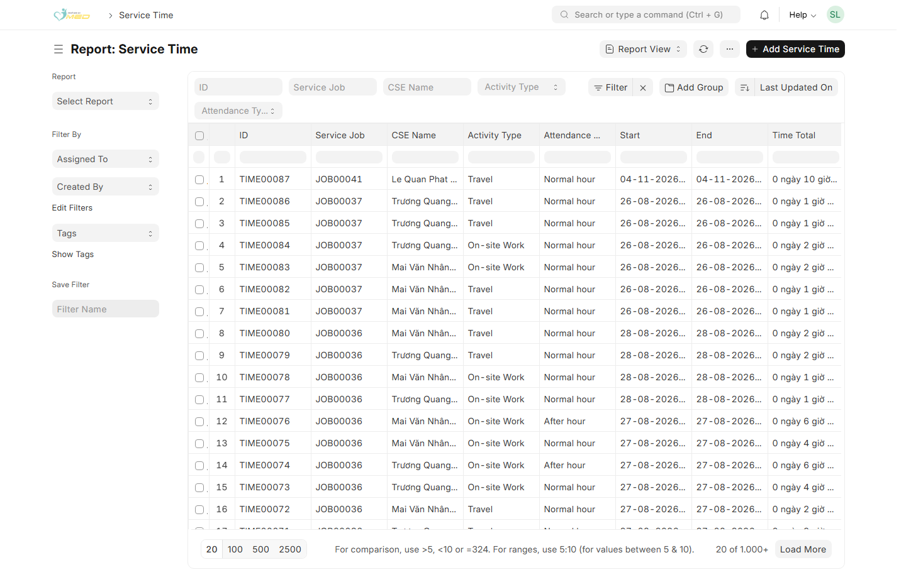
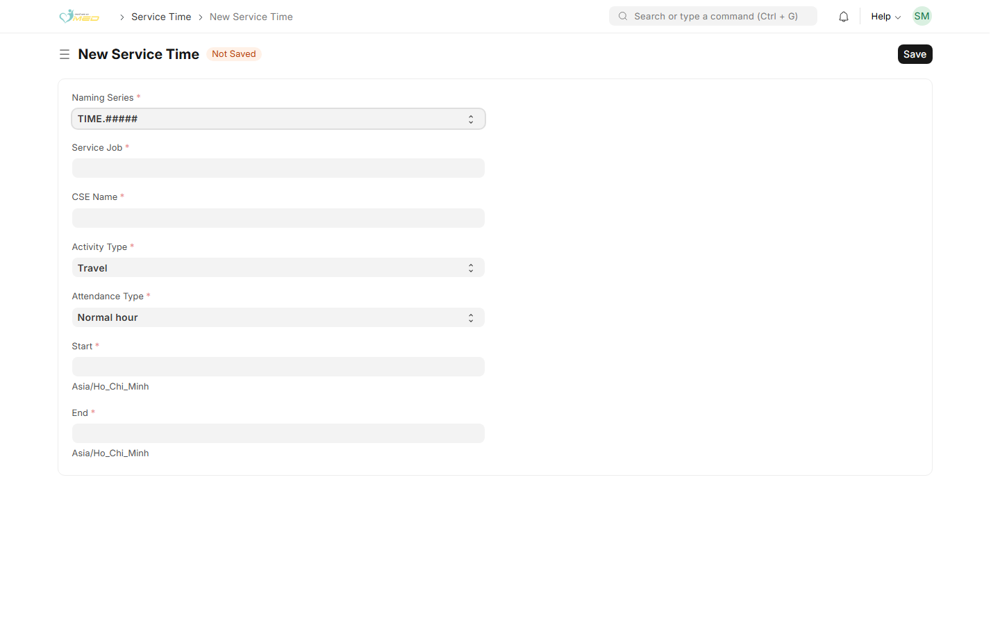
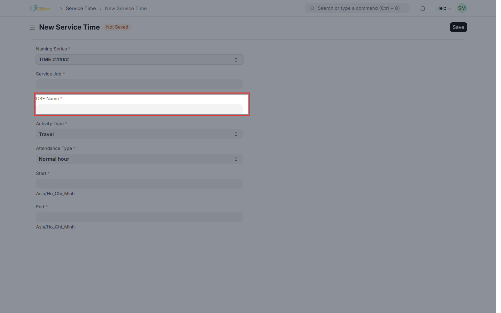

3. Tạo Service Time
Ai thực hiện: Service User — tạo giờ và sửa/xóa bản ghi của chính mình (CSE Name = bạn). Manager và Leader — tạo/sửa/xóa mọi Service Time (bảng tóm tắt).
Service Time ghi nhận từng khoảng thời gian làm việc của một CSE trên một Service Job (đi lại, làm tại site, hỗ trợ điện thoại, …).
Bước 3.1 — Mở form Service Time
Tìm Service Time → + Add Service Time.


Bước 3.2 — Gắn Service Job và CSE
- Service Job (bắt buộc) — chọn job cần ghi giờ.
- CSE Name (bắt buộc) — chỉ chọn được kỹ sư thuộc CSEs của job đó. Nếu job chưa có CSE, bổ sung CSE trên Service Job trước.
- Activity Type — ví dụ Travel, On-site Work, Phone Support, …
- Attendance Type — Normal hour, After hour, hoặc Holiday.
- Start / End — thời điểm bắt đầu và kết thúc; Time Total tính tự động khi lưu.

Lưu ý: Một Service Job có thể có nhiều Service Time (nhiều CSE hoặc nhiều khoảng giờ). Mỗi dòng time phải trỏ đúng job và đúng CSE tham gia job đó.
Bước 3.3 — Lưu Service Time
Nhấn Save. Lặp lại bước 3 cho các khoảng giờ / CSE khác trên cùng job hoặc job khác cùng Ticket.
Kết quả mong đợi
- Đúng phân vai: Manager — Ticket + Job; Leader — đọc/sửa Ticket (Approver), Job; User — đọc Ticket, tạo/sửa Job được giao (+ Job Status), ghi Service Time.
- Ticket lưu với Customers (≥1), Status, Approver (Leader/Manager) và ít nhất một CSE (User/Leader).
- Mỗi Service Job chọn đúng một Customer thuộc Ticket; Instrument (nếu có) lọc theo Customer trên job.
- Nhiều Service Job cùng trỏ một Ticket; kỹ sư trên từng job chỉ được chọn trong danh sách CSE của Ticket; Schedule hiển thị đúng nhãn theo Job Type; ràng buộc plan với Ticket chỉ áp dụng Preventive Maintenance.
- Nhiều Service Time trỏ một Service Job; mỗi dòng ghi đúng một kỹ sư (CSE Name) đã có trên job đó.
- Trên Ticket, badge Service Job trong Connections phản ánh số job đã tạo.
Sau khi có dữ liệu, quản lý dịch vụ có thể xem tổng hợp tại Service Job Report (số phiếu công việc) và Service Time Report (tổng giờ làm việc).
Xử lý sự cố thường gặp
| Triệu chứng | Nguyên nhân có thể | Cách xử lý |
|---|---|---|
| Service User cần tạo Ticket | User không tạo/sửa Ticket | Nhờ Service Manager (hoặc Leader nếu là Approver) tạo/sửa Ticket và danh sách Customers/CSEs |
| Service User cần job mới | User có thể tạo Service Job | Tạo job, chọn Ticket (đọc được), Customer trong phạm vi ticket, CSEs trên job |
| Lỗi khi chọn Approver | User không có vai trò Leader/Manager | Chọn user có iMED Service Leader hoặc iMED Service Manager |
| Không lưu được Ticket — thiếu CSE | Chưa chọn CSEs | Thêm ít nhất một CSE (Service User hoặc Service Leader) |
| Không thấy trường CSEs trên Service Job | Chưa chọn Ticket | Chọn Ticket trước |
| Không chọn được CSE ngoài ticket trên job | Theo quy định — job chỉ dùng kỹ sư đã khai trên Ticket | Sửa Ticket, thêm CSE cần thiết, lưu rồi chọn lại trên job |
| CSE Name trên Service Time trống / không đúng người | Chưa chọn job hoặc CSE không thuộc job | Chọn Service Job; đảm bảo CSE đã có trong CSEs của job |
| Không lưu Service Job — Schedule | Plan End sớm hơn Plan Start (hoặc Actual End sớm hơn Actual Start) | Chỉnh lại ngày hoặc xóa một trong hai ô của cặp đang hiển thị |
| Không lưu PM — Plan ngoài Ticket | Job Preventive Maintenance có Plan ngoài Plan Start/End Date của Ticket | Điều chỉnh plan trên job hoặc mở rộng ngày plan trên Ticket (Manager/Approver) |
| QC/Update lưu được dù deadline ngoài Ticket | Đúng thiết kế — chỉ PM bị ràng plan theo Ticket | Không cần sửa; PM mới cần nằm trong phạm vi Ticket |
| Đổi Job Type mà Schedule trống / nhãn lệch | Cache JS/CSS hoặc form chưa refresh | Ctrl+Shift+R; đổi lại Job Type một lần; nhờ admin bench build --app imed_crm nếu vừa nâng cấp |
| Ticket read-only — Customers/CSEs dính một dòng ID | Form chỉ đọc (Service User) | Chạy bench build --app imed_crm và làm mới trình duyệt; trên form read-only hệ thống hiển thị tên từng dòng |
| Không lưu Service Job — Customer | Customer không thuộc Ticket | Chọn Customer nằm trong Customers của Ticket; hoặc nhờ Manager/Approver bổ sung khách hàng trên Ticket |